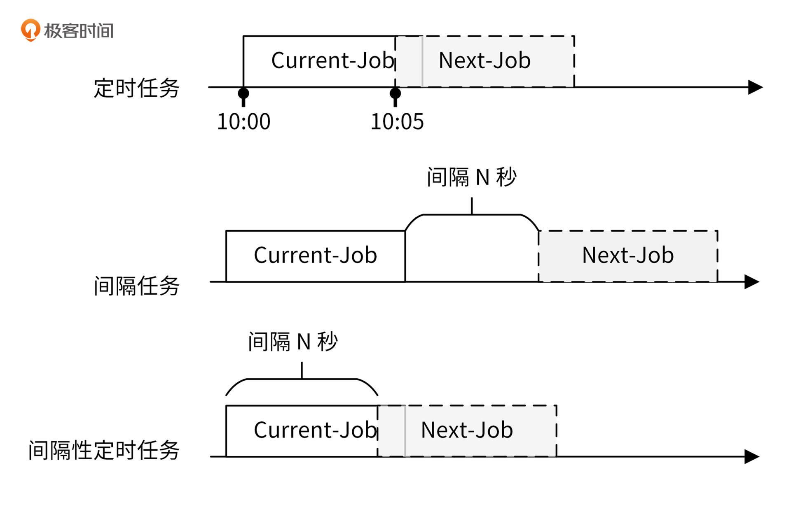

- 00 开篇词 从 0 开始搭建一个企业级 Go 应用.md.html
- 01 IAM系统概述：我们要实现什么样的 Go 项目？.md.html
- 02 环境准备：如何安装和配置一个基本的 Go 开发环境？.md.html
- 03 项目部署：如何快速部署 IAM 系统？.md.html
- 04 规范设计（上）：项目开发杂乱无章，如何规范？.md.html
- 05 规范设计（下）：commit 信息风格迥异、难以阅读，如何规范？.md.html
- 06 目录结构设计：如何组织一个可维护、可扩展的代码目录？.md.html
- 07 工作流设计：如何设计合理的多人开发模式？.md.html
- 08 研发流程设计（上）：如何设计 Go 项目的开发流程？.md.html
- 09 研发流程设计（下）：如何管理应用的生命周期？.md.html
- 10 设计方法：怎么写出优雅的 Go 项目？.md.html
- 11 设计模式：Go常用设计模式概述.md.html
- 12 API 风格（上）：如何设计RESTful API？.md.html
- 13 API 风格（下）：RPC API介绍.md.html
- 14 项目管理：如何编写高质量的Makefile？.md.html
- 15 研发流程实战：IAM项目是如何进行研发流程管理的？.md.html
- 16 代码检查：如何进行静态代码检查？.md.html
- 17 API 文档：如何生成 Swagger API 文档 ？.md.html
- 18 错误处理（上）：如何设计一套科学的错误码？.md.html
- 19 错误处理（下）：如何设计错误包？.md.html
- 20 日志处理（上）：如何设计日志包并记录日志？.md.html
- 21 日志处理（下）：手把手教你从 0 编写一个日志包.md.html
- 22 应用构建三剑客：Pflag、Viper、Cobra 核心功能介绍.md.html
- 23 应用构建实战：如何构建一个优秀的企业应用框架？.md.html
- 24 Web 服务：Web 服务核心功能有哪些，如何实现？.md.html
- 25 认证机制：应用程序如何进行访问认证？.md.html
- 26 IAM项目是如何设计和实现访问认证功能的？.md.html
- 27 权限模型：5大权限模型是如何进行资源授权的？.md.html
- 28 控制流（上）：通过iam-apiserver设计，看Web服务的构建.md.html
- 29 控制流（下）：iam-apiserver服务核心功能实现讲解.md.html
- 30 ORM：CURD 神器 GORM 包介绍及实战.md.html
- 31 数据流：通过iam-authz-server设计，看数据流服务的设计.md.html
- 32 数据处理：如何高效处理应用程序产生的数据？.md.html
- 33 SDK 设计（上）：如何设计出一个优秀的 Go SDK？.md.html
- 34 SDK 设计（下）：IAM项目Go SDK设计和实现.md.html
- 35 效率神器：如何设计和实现一个命令行客户端工具？.md.html
- 36 代码测试（上）：如何编写 Go 语言单元测试和性能测试用例？.md.html
- 37 代码测试（下）：Go 语言其他测试类型及 IAM 测试介绍.md.html
- 38 性能分析（上）：如何分析 Go 语言代码的性能？.md.html
- 39 性能分析（下）：API Server性能测试和调优实战.md.html
- 40 软件部署实战（上）：部署方案及负载均衡、高可用组件介绍.md.html
- 41 软件部署实战（中）：IAM 系统生产环境部署实战.md.html
- 42 软件部署实战（下）：IAM系统安全加固、水平扩缩容实战.md.html
- 43 技术演进（上）：虚拟化技术演进之路.md.html
- 44 技术演进（下）：软件架构和应用生命周期技术演进之路.md.html
- 45 基于Kubernetes的云原生架构设计.md.html
- 46 如何制作Docker镜像？.md.html
- 47 如何编写Kubernetes资源定义文件？.md.html
- 48 IAM 容器化部署实战.md.html
- 49 服务编排（上）：Helm服务编排基础知识.md.html
- 50 服务编排（下）：基于Helm的服务编排部署实战.md.html
- 51 基于 GitHub Actions 的 CI 实战.md.html
- 特别放送 Go Modules依赖包管理全讲.md.html
- 特别放送 Go Modules实战.md.html
- 特别放送 IAM排障指南.md.html
- 特别放送 分布式作业系统设计和实现.md.html
- 特别放送 给你一份Go项目中最常用的Makefile核心语法.md.html
- 特别放送 给你一份清晰、可直接套用的Go编码规范.md.html
- 直播加餐 如何从小白进阶成 Go 语言专家？.md.html
- 结束语 如何让自己的 Go 研发之路走得更远？.md.html
- 捐赠
特别放送 分布式作业系统设计和实现
你好，我是孔令飞，我们又见面了。结课并不意味着结束，我非常高兴能持续把好的内容分享给你，也希望你能继续在留言区与我保持交流，分享你的学习心得和实践经验。
今天这一讲，我们来聊聊如何设计分布式作业系统。在实际的Go项目开发中，我们经常会遇到下面这两个功能需求：
- 想定时执行某个任务，例如在每天上午10:00清理数据库中的无用数据。
- 轮训数据库表的某个字段，根据字段的状态，进行一些异步的业务逻辑处理。比如，监听到
table_xxx.status = 'pending'时，执行异步的初始化流程，完成之后设置table_xxx.status='normal'。
这两个在Go项目开发中非常常见、基础的功能需求，通常可以通过作业系统来实现。IAM为了解决这种常见的功能需求，也开发了自己的作业系统。今天这一讲，我们就来看下IAM是如何实现作业系统的。
任务分类
在介绍作业系统之前，这里先来看下任务的分类。理解任务的分类，有助于我们理解作业系统执行的任务类型，进而有助于我们设计作业系统。
在我看来，任务可以分为下面3类。
- 定时任务：定时任务会在指定的时间点固定执行。只要到达执行任务的时间点，就会执行任务，而不管上一次任务是否完成。
- 间隔任务：上一次任务执行完，间隔一段时间（如5秒、5分钟），再继续执行下一次任务。
- 间隔性定时任务：间隔任务的变种，从上一次任务开始执行时计时，只要间隔时间一到，便执行下一次任务，而不管上一次任务是否完成。
定时任务好理解，但间隔任务和间隔性定时任务不太好区分，它们的区别是：间隔任务会等待上一次任务执行完，间隔一段时间再执行下一次任务。而间隔性定时任务不会等待上一次任务执行完，只要间隔时间一到，便执行下一次任务。
三者的区别如下图所示：

在实际的项目开发中，我们经常会遇到这3类任务的需求。
作业系统的常见实现
在开始介绍IAM作业系统实现之前，有必要先介绍一下如何执行一个间隔/定时任务。只有了解了这些，才能更好地设计IAM的作业系统。通常来说，我们可以通过以下4种方式，来执行一个间隔/定时任务：
- 基于
time包提供的方法（例如time.Sleep、time.Ticker等 ）自己开发执行间隔/定时任务的服务。 - 一些Go包支持执行间隔/定时任务，可以直接使用这些Go包来执行间隔/定时任务，免去了自己开发作业调度部分的代码，例如
github.com/robfig/cron。 - 借助Linux的crontab执行定时任务。
- 使用开源的作业系统，并通过作业系统来执行间隔/定时任务，例如 distribworks/dkron。
上述4种方法，每一种都有自己的优缺点。采用第一种方法的话，因为一切都要从0开始实现，开发工作量大、开发效率低。我认为，因为已经有很多优秀的cron包可供使用了，没必要自己从0开发，可以直接使用这些cron包来执行周期/定时任务。IAM项目便采用了这种方法。
接下来，我先介绍下第三种和第四种方法：使用Linux crontab和使用开源的Go作业系统。然后，我们再来重点看看IAM项目采用的第二种方法。
Linux crontab
crontab是Linux系统自带的定时执行工具，可以在无需人工干预的情况下运行作业。crontab通过crond进程来提供服务，crond进程每分钟会定期检查是否有要执行的任务，如果有，则自动执行该任务。crond进程通过读取crontab配置，来判断是否有任务执行，以及何时执行。
crond进程会在下面这3个位置查找crontab配置文件。
/var/spool/cron/：该目录存放用户（包括root）的crontab任务，每个任务以登录名命名，比如colin用户创建的crontab任务对应的文件就是/var/spool/cron/colin。/etc/crontab：该目录存放由系统管理员创建并维护的crontab任务。/etc/cron.d/：该目录存放任何要执行的crontab任务。cron进程执行时，会自动扫描该目录下的所有文件，按照文件中的时间设定执行后面的命令。
可以看到，如果想执行一个crontab任务，就需要确保crond运行，并配置crontab任务。具体分为以下两步：
第一步，确保crond进程正在运行。
执行以下命令，查看crond进程运行状态：
$ systemctl status crond
● crond.service - Command Scheduler
Loaded: loaded (/usr/lib/systemd/system/crond.service; enabled; vendor preset: enabled)
Active: active (running) since Wed 2021-11-17 07:11:27 CST; 2 days ago
Main PID: 9182 (crond)
Tasks: 1
Memory: 728.0K
CGroup: /system.slice/crond.service
└─9182 /usr/sbin/crond -n
Active: active (running)说明crond进程正在运行，否则可以执行systemctl start crond启动crond进程。
第二步，配置crontab任务。
可以通过crontab -e来编辑配置文件，例如执行crontab -e后进入vi交互界面，并配置以下crontab任务：
# 每分钟输出时间到文件 /tmp/test.txt
* * * * * echo `date` >> /tmp/test.txt
# 每隔 2 分钟同步一次互联网时间
*/2 * * * * /usr/bin/ntpstat time.windows.com > /dev/null 2>&1
编辑后的配置文件保存在/var/spool/cron/$USER文件中。你可以通过crontab -l或者sudo cat /var/spool/cron/$USER来查看，例如：
$ crontab -l
# 每分钟输出时间到文件/tmp/test.txt
* * * * * echo `date` >> /tmp/test.txt
# 每隔 2 分钟同步一次互联网时间
*/2 * * * * /usr/bin/ntpstat time.windows.com > /dev/null 2>&1
如果想删除所有的crontab任务，你可以执行crontab -r命令。
配置的crontab任务需要遵循crontab的时间格式，格式如下：
.---------------- minute (0 - 59)
| .------------- hour (0 - 23)
| | .---------- day of month (1 - 31)
| | | .------- month (1 - 12) OR jan,feb,mar,apr ...
| | | | .---- day of week (0 - 6) (Sunday=0 or 7) OR sun,mon,tue,wed,thu,fri,sat
| | | | |
* * * * * <command to be executed>
可以看到，crontab只能精确到分钟，不能精确到秒。
下面是一些常用的crontab时间格式，你可以参考，来加深理解：
# 每分钟执行一次 <command>
* * * * * <command> # * 代表所有可能的值
# 每隔一小时执行一次 <command>
* */1 * * * <command> # / 表示频率
# 每小时的 15 和 30 分各执行一次 <command>
15,45 * * * * <command> # , 表示并列
# 在每天上午 8- 11 时中间每小时 15，45 分各执行一次 <command>
15,45 8-11 * * * <command> # - 表示范围
# 每个星期一的上午 8 点到 11 点的第 3 和第 15 分钟执行一次 <command>
3,15 8-11 * * 1 <command>
# 每隔两天的上午 8 点到 11 点的第 3 和第 15 分钟执行一次 <command>
3,15 8-11 */2 * * <command>
使用crontab执行周期/定时任务的优点是不用做任何开发，只需要配置crontab任务即可。至于缺点也很明显，主要有下面这几个：
- 不能精确到秒。
- 需要手动编写可执行命令。这些可执行命令跟项目分离，没办法复用项目提供的包、函数等能力。如果想执行跟项目关系紧密的作业，开发起来不方便。
- 单点，如果crond进程异常，周期/定时任务就没法继续执行。你可能想说：可以在两台机器上配置并执行相同的周期/定时任务。但是这样做会有问题，因为两台机器同时执行相同的任务，可能会彼此造成冲突或状态不一致。
- 没办法实现间隔任务和间隔性定时任务。
使用开源的作业系统
除了使用Linux系统自带的crontab之外，我们还可以使用一些业界优秀的开源作业系统。这里，我列出了一些比较受欢迎的Go语言开发的作业系统。之所以只选择Go语言开发的项目，一方面是想丰富你的Go语言生态，另一方面，同种语言也有助于你学习、改造这些项目。
- distribworks/dkron。dkron是一个分布式、启动迅速、带容错机制的定时作业系统，支持crontab表达式。它具有下面这些核心特性。
- 易用：可以通过易操作、漂亮的Web界面来管理作业。
- 可靠：具备容错机制，一个节点不可用，其他节点可继续执行作业。
- 高可扩展性：能够处理大量的计划作业和数千个节点。
- ouqiang/gocron。gocron是国人开发的轻量级定时任务集中调度和管理系统, 用于替代Linux-crontab。它具有下面这些核心特性。
- 具有Web界面管理定时任务。
- 支持crontab时间格式，并精确到秒。
- 支持shell命令和HTTP请求两种任务格式。
- 具有任务超时机制、任务依赖机制、任务执行失败可重试机制。
- 支持查看任务执行日志，并支持用邮件、Slack、Webhook等方式通知任务执行结果。
- shunfei/cronsun。cronsun 是一个分布式作业系统，单个节点同 crontab 近似。它具有下面这些核心特性。
- 具有Web界面，方便对多台服务器上的定时任务进行集中式管理。
- 任务调度时间粒度支持到秒级别。
- 任务执行失败可重试。
- 任务可靠性保障（从N个节点里面挑一个可用节点来执行任务）。
- 任务日志查看。
- 任务失败邮件告警（也支持自定义http告警接口）。
那么，这么多的开源项目该如何选择呢？这里建议你选择 distribworks/dkron 。原因是 distribworks/dkron Star数很多，而且功能齐全易用、文档丰富。当然，在实际开发中，你最好也对其他开源项目进行调研，根据需要选择一个最适合自己的开源项目。
使用这些作业系统的优点是不用开发、功能比crontab更强大，有些还是分布式的作业系统，具备容灾能力。但缺点也很明显：
- 这些作业系统支持的任务种类有限，比如一般会支持通过shell脚本及发送HTTP请求的方式来执行任务。不管哪种方式，实现都跟项目分离，在开发跟项目结合紧密的任务插件时不是很简单、高效。
- 很多时候我们只会使用其中一部分能力，或者仅有一到两个项目会使用到这类系统，但我们还要部署并维护这些作业系统，工作量大，收益小。
- 没办法实现间隔任务。
使用Linux的crontab和使用开源的Go作业系统，这两种方法的缺点都很明显。鉴于这些缺点，IAM系统选择使用现有的cron库封装自己的任务框架，并基于这个框架开发任务。IAM项目选择了robfig/cron库，原因是cron库Star数最多，且功能丰富、使用简单。另外IAM还使用github.com/go-redsync/redsync实现了基于Redis的分布式互斥锁。所以，在开始介绍IAM作业系统实现前，我先来简单介绍下如何使用这两个包。
github.com/robfig/cron使用介绍
github.com/robfig/cron是一个可以实现类似Linux crontab定时任务的cron包，但是cron包支持到秒。
cron包支持的时间格式
cron包支持crontab格式和固定间隔格式这两种时间格式，下面我来分别介绍下。
crontab格式的时间格式，支持的匹配符跟crontab保持一致。时间格式如下：
┌─────────────second 范围 (0 - 60)
│ ┌───────────── min (0 - 59)
│ │ ┌────────────── hour (0 - 23)
│ │ │ ┌─────────────── day of month (1 - 31)
│ │ │ │ ┌──────────────── month (1 - 12)
│ │ │ │ │ ┌───────────────── day of week (0 - 6) (0 to 6 are Sunday to
│ │ │ │ │ │ Saturday)
│ │ │ │ │ │
│ │ │ │ │ │
* * * * * *
第二种是固定间隔格式，例如@every <duration>。duration是一个可以被time.ParseDuration解析的字符串，例如@every 1h30m10s表示任务每隔1小时30分10秒会被执行。这里要注意，间隔不考虑任务的运行时间。例如，如果任务需要3分钟运行，并且计划每5分钟运行一次，则每次运行之间只有2分钟的空闲时间。
cron包使用示例
cron包的使用方法也很简单，下面是一个简单的使用示例：
package main
import (
"fmt"
"github.com/robfig/cron/v3"
)
func helloCron() {
fmt.Println("hello cron")
}
func main() {
fmt.Println("starting go cron...")
// 创建一个cron实例
cron := cron.New(cron.WithSeconds(), cron.WithChain(cron.SkipIfStillRunning(nil), cron.Recover(nil)))
// 添加一个定时任务
cron.AddFunc("* * * * * *", helloCron)
// 启动计划任务
cron.Start()
// 关闭着计划任务, 但是不能关闭已经在执行中的任务.
defer cron.Stop()
select {} // 查询语句，保持程序运行，在这里等同于for{}
}
在上面的代码中，通过 cron.New 函数调用创建了一个 cron 实例；接下来通过 cron 实例的 AddFunc 方法，给 cron 实例添加了一个定时任务：每分钟执行一次 helloCron 函数；最后通过 cron 实例的 Start 方法启动定时任务。在程序退出时，还执行了 cron.Stop() 关闭定时任务。
拦截器
cron包还支持安装一些拦截器，这些拦截器可以实现以下功能：
- 从任务的panic中恢复（
cron.Recover()）。 - 如果上一次任务尚未完成，则延迟下一次任务的执行（
cron.DelayIfStillRunning()）。 - 如果上一次任务尚未完成，则跳过下一次任务的执行（
cron.SkipIfStillRunning()）。 - 记录每个任务的调用（
cron.WithLogger()）。 - 任务完成时通知。
如果想使用这些拦截器，只需要在创建cron实例时，传入相应的Option即可，例如：
cron := cron.New(cron.WithSeconds(), cron.WithChain(cron.SkipIfStillRunning(nil), cron.Recover(nil)))
github.com/go-redsync/redsync使用介绍
redsync可以实现基于Redis的分布式锁，使用起来也比较简单，我们直接来看一个使用示例：
package main
import (
goredislib "github.com/go-redis/redis/v8"
"github.com/go-redsync/redsync/v4"
"github.com/go-redsync/redsync/v4/redis/goredis/v8"
)
func main() {
// Create a pool with go-redis (or redigo) which is the pool redisync will
// use while communicating with Redis. This can also be any pool that
// implements the `redis.Pool` interface.
client := goredislib.NewClient(&goredislib.Options{
Addr: "localhost:6379",
})
pool := goredis.NewPool(client) // or, pool := redigo.NewPool(...)
// Create an instance of redisync to be used to obtain a mutual exclusion
// lock.
rs := redsync.New(pool)
// Obtain a new mutex by using the same name for all instances wanting the
// same lock.
mutexname := "my-global-mutex"
mutex := rs.NewMutex(mutexname)
// Obtain a lock for our given mutex. After this is successful, no one else
// can obtain the same lock (the same mutex name) until we unlock it.
if err := mutex.Lock(); err != nil {
panic(err)
}
// Do your work that requires the lock.
// Release the lock so other processes or threads can obtain a lock.
if ok, err := mutex.Unlock(); !ok || err != nil {
panic("unlock failed")
}
}
上面的代码，创建了一个 redsync.Redsync 实例，并使用 redsync.Redsync 提供的 NewMutex 方法，创建了一个分布式锁实例 mutex。通过 mutex.Lock() 加锁，通过 mutex.Unlock() 释放锁。
IAM作业系统特点
在开发IAM的作业系统之前，我们需要先梳理好IAM要实现的任务。IAM需要实现以下两个间隔任务：
- 每隔一段时间从
policy_audit表中清理超过指定天数的授权策略。 - 每隔一段时间禁用超过指定天数没有登录的用户。
结合上面提到的作业系统的缺点，这里将我们需要设计的作业系统的特点总结如下：
- 分布式的作业系统，当有多个实例时，确保同一时刻只有1个实例在工作。
- 跟项目契合紧密，能够方便地复用项目提供的包、函数等能力，提高开发效率。
- 能够执行定时任务、间隔任务、间隔性定时任务这3种类型的任务。
- 可插件化地加入新的周期/定时任务。
IAM作业系统实现
介绍完IAM作业系统使用到的两个Go包和IAM作业系统的特点，下面我来正式讲解IAM作业系统的实现。
IAM的作业系统服务名叫iam-watcher。watcher是观察者的意思，里面的任务主要是感知一些状态，并执行相应的任务，所以叫watcher。iam-watcher main函数位于cmd/iam-watcher/watcher.go文件中。应用框架跟iam-apiserver、iam-authz-server、iam-pump保持高度一致，这里就不再介绍了。
整个iam-watcher服务的核心实现位于internal/watcher/server.go文件中，在server.go文件中调用了newWatchJob，创建了一个github.com/robfig/cron.Cron类型的cron实例，newWatchJob 代码如下：
func newWatchJob(redisOptions *genericoptions.RedisOptions, watcherOptions *options.WatcherOptions) *watchJob {
logger := cronlog.NewLogger(log.SugaredLogger())
client := goredislib.NewClient(&goredislib.Options{
Addr: fmt.Sprintf("%s:%d", redisOptions.Host, redisOptions.Port),
Username: redisOptions.Username,
Password: redisOptions.Password,
})
pool := goredis.NewPool(client)
rs := redsync.New(pool)
cron := cron.New(
cron.WithSeconds(),
cron.WithChain(cron.SkipIfStillRunning(logger), cron.Recover(logger)),
)
return &watchJob{
Cron: cron,
config: watcherOptions,
rs: rs,
}
}
上述代码创建了以下两种类型的实例。
github.com/robfig/cron.Cron：基于github.com/robfig/cron包实现的作业系统，可以支持定时任务、间隔任务、间隔性定时任务 3种类型的任务。github.com/go-redsync/redsync.Redsync：基于Redis的分布式互斥锁。
这里需要注意，创建cron实例时需要增加cron.SkipIfStillRunning() Option，SkipIfStillRunning可以使cron任务在上一个任务还没执行完时，跳过下一个任务的执行，以此实现间隔任务的效果。
创建实例后，通过addWatchers()来注册cron任务。addWatchers 函数代码如下：
func (w *watchJob) addWatchers() *watchJob {
for name, watcher := range watcher.ListWatchers() {
// log with `{"watcher": "counter"}` key-value to distinguish which watcher the log comes from.
ctx := context.WithValue(context.Background(), log.KeyWatcherName, name)
if err := watcher.Init(ctx, w.rs.NewMutex(name, redsync.WithExpiry(2*time.Hour)), w.config); err != nil {
log.Panicf("construct watcher %s failed: %s", name, err.Error())
}
_, _ = w.AddJob(watcher.Spec(), watcher)
}
return w
}
上述函数会调用watcher.ListWatchers()列出所有的watcher，并在for循环中将这些watcher添加到cron调度引擎中。watcher定义如下：
type IWatcher interface {
Init(ctx context.Context, rs *redsync.Mutex, config interface{}) error
Spec() string
cron.Job
}
type Job interface {
Run()
}
也就是说，一个watcher是实现了以下3个方法的结构体：
Init()，用来初始化wacther。Spec()，用来返回Cron实例的时间格式，支持Linux crontab时间格式和@every 1d类型的时间格式。Run()，用来运行任务。
IAM实现了两个watcher：
- task：禁用超过
X天还没有登录过的用户，X可由iam-watcher.yaml配置文件中的watcher.task.max-inactive-days配置项来配置。 - clean：清除
policy_audit表中超过X天数后的授权策略，X可由iam-watcher.yaml配置文件中的watcher.clean.max-reserve-days配置项来配置。- 创建完cron实例后，就可以在Run函数中启动cron任务。Run函数代码如下：
func (s preparedWatcherServer) Run() error {
stopCh := make(chan struct{})
s.gs.AddShutdownCallback(shutdown.ShutdownFunc(func(string) error {
// wait for running jobs to complete.
ctx := s.cron.Stop()
select {
case <-ctx.Done():
log.Info("cron jobs stopped.")
case <-time.After(3 * time.Minute):
log.Error("context was not done after 3 minutes.")
}
stopCh <- struct{}{}
return nil
}))
// start shutdown managers
if err := s.gs.Start(); err != nil {
log.Fatalf("start shutdown manager failed: %s", err.Error())
}
log.Info("star to run cron jobs.")
s.cron.Start()
// blocking here via channel to prevents the process exit.
<-stopCh
return nil
}
上述代码，通过s.cron.Start()代码调用来启动cron实例，执行cron任务。
这里需要注意，我们还需要实现优雅关停功能，也就是当程序结束时，等待正在执行的作业都结束后，再终止进程。s.cron.Stop()会返回context.Context类型的变量，用来告知调用者cron任务何时结束，以使调用者终止进程。在cron任务都执行完毕或者超时3分钟后，会往 stopCh 通道中写入一条message，<-stopCh 会结束阻塞状态，进而退出iam-watcher进程。
task watcher实现解读
task watcher的实现位于internal/watcher/watcher/task/watcher.go文件中，该文件定义了一个taskWatcher结构体：
type taskWatcher struct {
ctx context.Context
mutex *redsync.Mutex
maxInactiveDays int
}
taskWatcher实现了IWatcher接口。在程序启动时，通过 init 函数将taskWatcher注册到internal/watcher/watcher/registry.go中定义的全局变量registry中，通过func ListWatchers() map[string]IWatcher函数返回所有注册的watcher。
这里需要注意，所有的watcher在internal/watcher/watcher/all/all.go文件中以匿名包的形式被导入，从而触发watcher所在包的init函数的执行。init函数通过调用watcher.Register("clean", &cleanWatcher{})将watcher注册到registry变量中。all.go文件中导入匿名包代码如下：
import (
_ "github.com/marmotedu/iam/internal/watcher/watcher/clean"
_ "github.com/marmotedu/iam/internal/watcher/watcher/task"
)
这样做的好处是，不需要修改任何iam-watcher的框架代码，就可以插件化地注册一个新的watcher。不改动iam-watcher的主体代码，能够使我们以最小的改动添加一个新的watcher。例如，我们需要新增一个 cleansecret watcher，只需要执行以下两步即可：
- 在
internal/watcher/watcher目录下新建一个cleansecret目录，并实现cleanSecretWatcher。 - 在
internal/watcher/watcher/all/all.go文件中以匿名的形式导入github.com/marmotedu/iam/internal/watcher/watcher/cleansecret包。- 在taskWatcher的Run()方法中，我们通过以下代码，来确保即使有多个iam-watcher实例，也只有一个task watcher在执行：
if err := tw.mutex.Lock(); err != nil {
log.L(tw.ctx).Info("taskWatcher already run.")
return
}
defer func() {
if _, err := tw.mutex.Unlock(); err != nil {
log.L(tw.ctx).Errorf("could not release taskWatcher lock. err: %v", err)
return
}
}()
我们在taskWatcher的Run()方法中，查询出所有的用户，并对比loginedAt字段中记录的时间和当前时间，来判断是否需要禁止用户。loginedAt字段记录了用户最后一次登录的时间。
通过task watcher的实现，可以看到：在task watcher中，我们使用了IAM项目提供的mysql.GetMySQLFactoryOr函数、log包，以及Options配置，这使我们可以很方便地开发一个跟项目紧密相关的任务。
总结
在Go项目开发中，我们经常会需要执行一些间隔/定时任务，这时我们就需要一个作业系统。我们可以使用Linux提供的crontab执行定时任务，还可以自己搭建一个作业系统，并在上面执行我们的间隔/定时任务。但这些方法都有一些缺点，比如跟项目独立、无法执行间隔任务等。所以，这时候比较好的方式是基于开源的优秀cron包，来实现一个作业系统，并基于这个作业系统开发任务插件。
IAM基于github.com/robfig/cron包和github.com/go-redsync/redsync包，实现了自己的分布式作业系统iam-watcher。iam-watcher可以插件化地添加定时任务、间隔任务、间隔性定时任务。至于它的具体实现，你可以跟读iam-watcher服务的代码，其main函数位于cmd/iam-watcher/watcher.go文件中。
课后练习
- 思考一下：在日常工作中，除了定时任务、间隔任务、间隔性定时任务外，还有没有其他类型的任务需求？欢迎在评论区分享。
- 尝试实现一个新的watcher，用来从secret表中删除过期的secret。- 欢迎你在留言区与我交流讨论。如果这一讲对你有帮助，也欢迎分享给你身边的朋友。
© 2019 - 2023 Liangliang Lee. Powered by gin and hexo-theme-book.